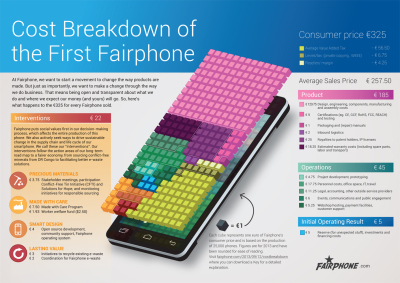

Erstes faires Smartphone wurde auf Messe in Dortmund vorgestellt
Das erste sozial gerechte und möglichst umweltfreundlich hergestellte Smartphone soll im Dezember ausgeliefert werden. Im Moment liefen die letzten Vorbereitungen für den Start der Produktion des Fairphone, teilte die hinter dem Telefon stehende Initiative mit. Am Freitag sollte das Fairphone im Rahmen einer Diskussionsveranstaltung auf der Fairtrade-Messe FA!R in Dortmund vorgestellt werden.
Ein "wirklich cooles" Smartphone
Die in den Niederlanden ansässige Initiative Fairphone verspricht ein "wirklich cooles" Smartphone. Das Wichtigste aber ist: Es wird unter möglichst fairen Bedingungen hergestellt werden. Dazu war ein mehrjähriger Vorlauf notwendig, um soziale und Umweltaspekte der Smartphone-Herstellung zu untersuchen und Alternativen zu entwickeln. Jetzt wird laut Fairphone der Prototyp zertifiziert, die Software aktualisiert. Für Oktober und November ist die Herstellung in China unter fairen Arbeitsbedingungen geplant. Im Dezember soll dann die Auslieferung starten.
"Konsumieren ist ein politischer Akt", erklärte der Gründer der Initiative, Bas van Abel. Deshalb kann auf fairphone.com jeder nachlesen, woher die Rohstoffe kommen und wer sie verarbeitet. Zinn und Coltan etwa kommen aus Minen in der Demokratischen Republik Kongo, in denen "Menschen menschlich behandelt werden" und die Erlöse nicht dazu dienen, kriegerische Konflikte zu finanzieren. Die Arbeiter in China, die das Handy zusammenbauen, werden den Angaben zufolge über einen Fonds "angemessen" entlohnt. Ziel ist, dass die Arbeiter Gewerkschaften gründen und selbst mit der Geschäftsführung verhandeln können. Das werde aber "noch Zeit brauchen".
Akku herausnehmbar und ersetzbar
Das Fairphone soll außerdem lange haltbar sein - und gut wiederzuverwerten. So ist etwa der Akku herausnehmbar und ersetzbar. Die Initiative verspricht zudem genaue Auskunft über die Zusammensetzung der Bestandteile und der Kosten. Ziel ist, das Telefon eines Tages komplett aus Recyclingmaterial zu bauen - was schon jetzt bei der Smartphone-Hülle der Fall ist.
Produziert werden in einem ersten Schritt 25.000 Telefone. Über 14.000 sind bereits verkauft, die restlichen knapp 9.000 können auf der Fairphone-Internetseite fairphone.com für 325 Euro vorbestellt werden. Das Fairphone ist damit im Vergleich zu zahlreichen konventionellen Konkurrenzprodukten sogar vergleichsweise günstig.
Crowdfunding
Für die ersten 5.000 Telefone hatte Fairphone auf sogenanntes Crowdfunding gesetzt: Interessierte Käufer konnten dort ihr Interesse anmelden. Nur bei Erreichen der Zahl 5.000 sollte das Telefon produziert werden, andernfalls hätten die potenziellen Käufer ihr Geld zurückerhalten. Die Nachfrage war allerdings groß, die Mindest-Stückzahl binnen kurzer Zeit erreicht. (APA, 07.09. 2013)